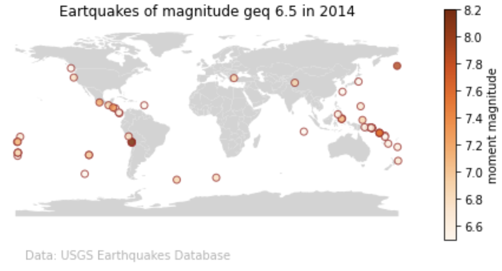

15 *Lab: Maps
In the Taylor server, start a new JupyterLab session or access an active one.
In the directory navigation bar, open the
eds-220-sectionsdirectory you created in the last lab.In the terminal, navigate into the
eds-220-sectionsdirectory and verifyeds-220-sectionsis your current working directory.Create a new Python Notebook in
eds-220-sections.Update the notebook’s name to something useful like ‘map-earthquake-data.ipynb’.
Use the terminal to stage, commit, and push this file to the remote repository.
If you are prompted for your credentials and need to set up a new Personal Access Token (PAT) follow steps 13-18 in this guide to set it up.
- Add comments in each one of your code cells
- Include markdown cells in between your code cells to add titles/information to each exercise
- You won’t need to upload any data.
For this task we are going to use two datasets.
First dataset
Simplified data from the USGS Earthquakes Database. This is the same dataset we used for homework 1, task 4. It is in tabular format and has the following columns:
- time = date and time of event (all events from 2014)
- latitude = decimal degrees [-90,90]
- longitude = decimal degrees [-360,360]
- depth = depth of the event (km)
- mag = magnitude of event
- id = event identifier
- place = where the event took place
- type = type of event
Further information about the dataset can be accessed in the ANSS Comprehensive Earthquake Catalog (ComCat) Documentation.
Second dataset
The second dataset is Natural Earth’s low resolution cultural boundaries data. These low-resolution polygons are available directly through geopandas and are useful to make maps of the whole world, although might not be suitable for mapping individual nations or detailed geospatial analysis.
15.1 Earthquake data
15.1.1 Import data
Import the earthquake data directly from the following URL (it is a csv file). Store it in a variable
raw_eqk.Do some simple preliminary exploration of the
raw_eqkdataframe.
15.1.2 Data selection
- Check which are the unique values for the type of earthquakes.
- Select only data with with type equal to ‘eartquake’ and magnitude greater than or equal to 6.5.
- Store this as a new dataframe called
eqk.
15.1.3 pd.DataFrame to gpd.GeoDataFrame
- Overwrite
eqkdataframe as ageopandas.GeoDataFrame. HINT: find the CRS of the dataset by looking at the metadata. - Make a simple plot of the
eqkdata.
15.2 Import low-resolution countries polygons
Run the following line to import Natural Earth’s low-resolution countries polygons using geopandas:
worldmap = gpd.read_file(gpd.datasets.get_path("naturalearth_lowres"))
worldmap15.3 Map
Create a map of the earthquales of magnitude greater equal to 6.5 across the world in 2014. Color the points by the magnitude. This is an example of how it could look like:
